건축산업기사 (2015-03-08 기출문제)
1과목: 건축계획
1. 상점 건축의 동선 계획에 관한 설명으로 옳지 않은 것은?
- 동선에 변화를 주기 위해 바닥 면에 고저차를 두군 것이 좋다.
- 고객 동선과 종업원 동선은 교차되지 않는 것이 바람직하다.
- 고객 동선은 가능한 길게 하여 다수의 손님을 수용하도록 하는 것이 좋다.
- 종업원 동선은 가능한 한 짧게 하여 소수의 종업원으로도 판매가 능률적이 되도록 계획한다.
(정답률: 91%)

2. 다음 중 사무소 건축의 기준층 평면형태의 결정 요인에 속하지 않는 것은?
- 구조상 스팬의 한도
- 엘리베이터의 처리능력
- 대피상의 최대 피난거리
- 자연광에 의한 조명한계
(정답률: 81%)
3. 엘리베이터 배치 계획시 고려사항으로 옳지 않은 것은?
- 일렬 배치는 6대를 한도로 한다.
- 교통동선의 중심에 설치하여 보행거리가 짧도록 배치한다.
- 엘리베이터 홀은 엘리베이터 정원의 합계의 50% 정도를 수용할 수 있도록 한다.
- 여러 대의 엘리베이터를 설치하는 경우, 그룹별 배치와 군 관리 운전방식으로 한다.
(정답률: 85%)
4. 소규모 주택에서 거실과 부엌을 동일공간으로 한 형식은?
- 리빙키친
- 리빙 다이닝
- 다이닝 키친
- 다이닝 포치
(정답률: 68%)
5. 사무소 건축의 코어에 관한 설명으로 옳지 않은 것은?
- 코어는 구조내력벽으로 이용할 수 있다.
- 건물 내의 설비시설을 집중시킬 수 있다.
- 코어 내의 각 공간이 각 층마다 공통의 위치에 있게 한다.
- 대규모 건물의 코어는 보행거리를 평균화하기 위해 한쪽으로 편중하는 것이 좋다.
(정답률: 81%)
6. 다음 설명에 알맞은 부엌의 유형은?
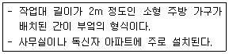
- 독립형
- 키친네트
- 오픈 키친
- 다용도 부엌
(정답률: 70%)
7. 다음 중 주거단지 내의 공동주택 배치 계획에 있어서 남북간 인동간격의 결정과 관계가 먼 것은?
- 일조와 채광
- 건물의 높이
- 건물의 동서길이
- 프라이버시의 유지
(정답률: 83%)
8. 테라스 하우스에 관한 설명으로 옳지 않은 것은?
- 연속주택이라고도 한다.
- 평지에서는 계획이 불가능하다.
- 도로를 중심으로 상향식과 하향식으로 구분할 수 있다.
- 각 세대마다 테라스를 이용한 옥외 공간 확보가 가능하다.
(정답률: 81%)
9. 사무소 건축에서 엘리베이터의 조닝(zonung)의 효과에 관한 설명으로 옳지 않은 것은?
- 사무실의 유효면적이 증가한다.
- 엘리베이터의 일주시간이 증가한다.
- 엘리베이터의 설비 비용이 감소한다.
- 초기 이용자가 혼란에 빠질 우려가 있다.
(정답률: 65%)
10. 업무시설 중 지방자치단체의 청사에 의무적으로 설치하여야 하는 장애인 증의 편의시설에 속하지 않는 것은?
- 장애인전용주차구역
- 장애인 등의 이용이 가능한 욕실
- 장애인 등의 이용이 가능한 화장실
- 높이 차이가 제거된 건축물 출입구
(정답률: 90%)
11. 실내공간의 구성기법에 관한 설명으로 옳지 않은 것은?
- 폐쇄형 공간구성은 공간 사용에 있어 융통성이 부족하다.
- 개방형 공간구성을 폐쇄형 공간구성보다 에너지 절약에 유리하다.
- 다목적 공간구성은 장래의 공간 활용에 있어 양적, 질적 변화에 대처할 수 있다.
- 개방형 공간구성에서 영역의 구획 방법으로는 마감재의 변화, 조명의 변화 등이 사용된다.
(정답률: 77%)
12. 단독주택의 현관 및 복도에 관한 설명으로 옳지 않은 것은?
- 현관의 위치는 대지의 형태, 도로와의 관계 등에 영향을 받는다.
- 현관은 주택의 측면, 후면보다 전면에 배치하는 것이 바람직하다.
- 소규모 주택에서는 원활한 동선을 위해 복도를 두는 것이 바람직하다.
- 복도로 연결된 각 공간의 문은 복도의 폭이 좁을 경우 안여닫이로 계획하는 것이 바람직하다.
(정답률: 87%)
13. 상점의 매장 및 정면(Facada) 구성에 요구되는 AIDMA법칙 내용으로 옳지 않은 것은?
- Action
- Interest
- Design
- Memory
(정답률: 82%)
14. 공장건축의 작업장 레이아웃(lay out)에 관한 설명으로 옳지 않은 것은?
- 레이아웃은 장래 공장 규모의 변화에 대응하는 융통성이 있어야 한다.
- 제품중심의 레이아웃은 생산에 필요한 모든 공정, 기계, 기구를 제품의 흐름에 따라 배치하는 방식이다.
- 공정중심의 레이아웃은 대량 생산에 적합하며, 공정간의 시간적, 수량적 생산균형을 이룰 수 있다.
- 고정식 레이아웃은 주가 되는 재료나 조립부품을 고정된 장소에 두고, 사람이나 기계가 그 장소로 이동해 가서 작업을 행하는 방식이다.
(정답률: 76%)
15. 학교건축에서 교실의 채광 및 조명에 관한 설명으로 옳지 않은 것은?
- 책상면의 조도가 칠판면의 조도보다 높게 한다.
- 교실 채광은 일조시간을 길게 확보할 수 있는 방위를 선택한다.
- 1방향 채광일 경우 직사광보다는 반사광이 균일한 조도 확보에 유리하다.
- 교실에 비치는 빛은 칠판을 향해 있을 때 좌측에서 들어오는 것이 일반적이다.
(정답률: 77%)
16. 아파트의 평면형식에 관한 설명으로 옳지 않은 것은?
- 집중형은 대지의 이용률이 높다.
- 계단실형은 통행을 위한 공용 면적이 작다.
- 편복도형은 거주성이 균일한 배치구성이 가능하다.
- 중복도형은 모든 세대에 남향의 거실을 계획할 수 있다.
(정답률: 80%)
17. 상점의 판매형식 중 대면판매에 관한 설명으로 옳지 않은 것은?
- 포장, 계산이 편리하다.
- 상품에 대한 설명을 하기에 편리하다.
- 판매원이 정위치를 정하기가 용이하다.
- 진열면적이 커져 상품의 구매와 선택이 용이하다.
(정답률: 80%)
18. 상점의 점두형식 중 폐쇄형에 관한 설명으로 옳지 않은 것은?
- 고객의 출입이 많은 상점에 적합하다.
- 보석점, 귀금속점 등의 상점에 적합하다.
- 고객이 상점 내에 비교적 오래 머무르는 경우에 적합하다.
- 상점내의 분위기가 중요하며, 고객이 내부 분위기에 만족하도록 계획한다.
(정답률: 86%)
19. 다음 설명에 알맞은 코어 형식은?
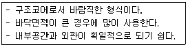
- 외코어형
- 중심코어형
- 편심코어형
- 양측코어형
(정답률: 86%)
20. 학교건축의 배치 유형 중 분산병렬형에 관한 설명으로 옳지 않은 것은?
- 구조계획이 간단하다.
- 좁은 대지에 적용이 용이하다.
- 건축물간의 유기적 구성이 어렵다.
- 일조, 통풍의 환경조건을 균등하게 할 수 있다.
(정답률: 74%)
2과목: 건축시공
21. 공사 실행 공정표의 작성시기에 대한 설명으로 옳은 것은?
- 공사착수 직전에 작성
- 공사착수 후 곧 작성
- 공사설계와 동시에 작성
- 공사입찰과 동시에 작성
(정답률: 70%)
22. 아스팔트 방수재의 성질을 판정하기 위한 요소는?
- 시공연도
- 마모도
- 침입도
- 강도
(정답률: 75%)
23. 알루미늄 창호공사에서 주의사항으로 틀린 것은?
- 알칼리에 약해 모르타르와의 접촉을 피한다.
- 알루미늄은 부식방지 조치를 할 필요가 없다.
- 녹막이에는 연(鉛)을 함유하지 않은 도료를 사용한다.
- 표면이 연하여 운반, 설치작업 시 손상되기 쉽다.
(정답률: 84%)
24. 구조용 재료로 사용되는 목재의 조건으로 부적합한 것은?
- 강도가 크며, 곧고 긴 재를 얻을 수 있을 것
- 건조수축으로 인한 수축 및 변형이 클 것
- 잘 썩지 않고, 충해에 저항이 클 것
- 질이 좋고 공작이 용이할 것
(정답률: 86%)
25. 시멘트의 비표면적을 나타내는 것은?
- 조립율(FM : fineness modulus)
- 수경율(HM : hydration modulus)
- 분말도(fineness)
- 슬럼프치(slump)
(정답률: 74%)
26. 건설원가의 구성체계에서 직접공사비를 구성하는 주요 요소가 아닌 것은?
- 자재비
- 노무비
- 외주비
- 현장관리비
(정답률: 78%)
27. 건축 실내공사에서 이동이 용이한 비계는?
- 겹비계
- 쌍줄비계
- 말비계
- 외줄비계
(정답률: 81%)
28. 시스템거푸집이 아닌 것은?(오류 신고가 접수된 문제입니다. 반드시 정답과 해설을 확인하시기 바랍니다.)
- 갱폼
- 터널폼
- 우레탄폼
- 드라이비트
(정답률: 51%)
29. 기둥, 벽 등의 모서리에 대어 미장바름용에 사용하는 철물명칭은?
- 코너비드
- 논슬립
- 인서트
- 드라이비트
(정답률: 86%)
30. 콘크리트를 제조하는 자동설비로서, 재료의 저장설비, 계량설비, 혼합설비 등으로 구성되어 있는 기계설비는?
- 에지데이터 트럭
- 플라이애시 사일로
- 배쳐플랜트
- 슬럼프 모니터
(정답률: 72%)
31. 회반죽의 재료가 아닌 것은?
- 명반
- 해초풀
- 여물
- 소석회
(정답률: 71%)
32. 건설사업관리의 업무영역이 아닌 것은?
- 프로젝트의 계획
- 입찰서류 및 계약관리 업무
- 공정관리 업무
- 시설물 유지관리 업무
(정답률: 75%)
33. 판유리를 연화점에 가깝게(500~600) 가열해 두고 양면에 냉기를 불어 넣어 급랭시켜 강도를 높인 안전유리의 일종은?
- 망입유리
- 강화유리
- 형판유리
- 중공복층유리
(정답률: 82%)
34. 철근콘크리트공사에서 워커빌리티의 측정방법이 아닌 것은?
- 슬럼프시험
- 드롭테이블시험
- 구관입시험
- 강도시험
(정답률: 53%)
35. 콘크리트 재료분리현상을 줄이기 위한 방법으로 틀린 것은?
- 잔골재율을 작게 한다.
- 물시멘트비를 작게 한다.
- 잔골재 중의 0.15~0.3mm의 정도의 세립분을 증가시킨다.
- AE제, 플라이에시 등을 사용한다.
(정답률: 53%)
36. 지내력 시험의 평판재하판으로 사용되는 규격은?
- 45cm각이 보통 사용된다.
- 40cm각이 보통 사용된다.
- 35cm각이 보통 사용된다.
- 30cm각이 보통 사용된다.
(정답률: 66%)
37. 흙막이 공법 중 흙막이 자체가 지하 본구조물의 옹벽을 형성하는 것은?
- H-Pile 및 토류판
- 소일네일링공법(soil nailing)
- 시멘트 주열벽(soil cement wall)
- 슬러리월 공법(slurry wqll)
(정답률: 77%)
38. 기본벽돌(1909⑤7mm)을 사용한 1.5B 쌓기의 벽두께 치수로서 옳은 것은?(단, 공간쌓기 벽이 아님)
- 260mm
- 290mm
- 320mm
- 360mm
(정답률: 78%)
39. 다음 시멘트의 종류 중 내화성과 급결성이 가장 큰 시멘트는?
- 보통 포틀랜드 시멘트
- 고로 시멘트
- 실리카 시멘트
- 알루미나 시멘트
(정답률: 53%)
40. 철골 공사용 기계 기구 중 그 사용용도가 나머지 셋과 다른 것은?
- 리머(Reamer)
- 펀칭해머(Punching Hammer)
- 드릴(Drill)
- 토크렌치(Torque Wrench)
(정답률: 64%)
3과목: 건축구조
41. 단면적 A, 길이 ℓ인 탄성체에 축방향력 P가 작용하여 △ℓ만큼 늘어났다. 이 때 응력도, 변형도, 탄성계수를 각각 σ, ε, E라 한다면 다음 관계식중 틀린 것은?
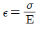
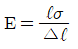
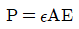
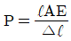
(정답률: 58%)
42. 다음과 같은 단면적에서 X-X축에 대한 단면2차모멘트는?
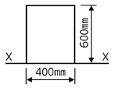
- 72×10smm4
- 144×10smm4
- 216×10smm4
- 288×10smm4
(정답률: 42%)
43. 그림과 같은 구조물의 최대 휨 응력은?
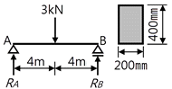
- 0.72MPa
- 0.92MPa
- 1.12MPa
- 1.32MPa
(정답률: 64%)
44. 그림과 같은 구조물의 판정 결과는?
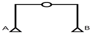
- 정정
- 1차 부정정
- 2차 부정정
- 3차 부정정
(정답률: 63%)
45. 강구조에 대한 설명 중 틀린 것은?
- 장스팬 구조물이나 고층건물에 적합하다.
- 고열에 강하고 내화성이 우수하다.
- 부재 길이가 비교적 길고 좌굴하기 쉽다.
- 다른 구조재료에 비하여 균질도가 우수하다.
(정답률: 58%)
46. 철근콘크리트의 구조설계에서 철근의 부착력에 영향을 주지 않는 것은?
- 콘크리트 피복두께
- 콘크리트 압축강도
- 철근의 외부표면 돌기
- 철근의 항복강도
(정답률: 62%)
47. 그림과 같이 단면이 균일한 캔틸레버보의 끝단에 하중 P가 작용하여 x만큼의 변위가 발생하였다. 같은 하중에서 끝단의 처짐이 6x가 되기 위해서는 보의 길이를 기존길이의 몇 배로 해야 하는가?
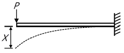
- 1.62배
- 1.82배
- 2.02배
- 2.22배
(정답률: 47%)
48. 감도설계법에 의한 설계시 그림과 같은 띠철근기둥의 최대 설계 축하중은? (단, fck=24MPa, fy=400MPa, 강도감소계수는 0.65임)
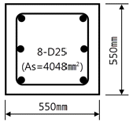
- 3908 kN
- 4008 kN
- 4108 kN
- 4208 kN
(정답률: 43%)
49. 그림과 같은 단순보의 A점에서 전단력이 0이 되는 위치까지의 거리는?
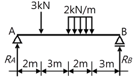
- 2m
- 5m
- 5.5m
- 5.67m
(정답률: 53%)
50. 내부슬래브의 주변에 보와 지판이 없고 fy=400MPa일 경우, 슬래브의 최소두께 산정식은 ln/33이다. 이 식에서 ln으로 옳은 것은?
- 2방향슬래브의 순경간
- 2방향슬래브의 단변의 순경간
- 2방향슬래브 장변의 기둥중심간 거리
- 2방향슬래브 단변의 기둥중심간 거리
(정답률: 38%)
51. 철근콘크리트 강도설계법에서 처짐을 계산하지 않는 경우, 단순지지된 보의 최소 두께(h)를 구하면? (단, 보의 길이=6m, 보통콘크리트 사용, fy=400MPa)
- 312.5 mm
- 375.0 mm
- 412.6 mm
- 432.8 mm
(정답률: 60%)
52. 그림과 같은 독립기초에 압축력 N=300kN, 모멘트 M=150kN·m가 작용할 때 기초저면에 압축반력만 생기게 하는 최소 기초 길이(L)는? (단, 흙의 자중 및 기초자중은 무시)
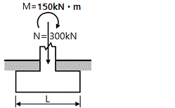
- 2.0 m
- 2.4 m
- 3.0 m
- 3.6 m
(정답률: 44%)
53. 그림과 같은 라멘구조에서 기둥 AB부재에 모멘트가 발생하지 않게 하기 위한 집중하중 P의 값은?
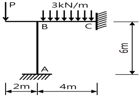
- 0.5 kN
- 1.0 kN
- 1.5 kN
- 2.0 kN
(정답률: 38%)
54. 그림과 같은 캔틸레버보의 자유단에 휨모멘트 5kN·m와 집중하중 P가 작용할 때 자유단의 처짐각이 0이 되기 위한 P를 구하면?
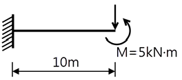
- 1kN
- 3kN
- 5kN
- 7kN
(정답률: 28%)
55. 독립기초 설계 시 탄성체에 가까운 경질 점토에 하중이 작용하였을 경우 자중응력 분포도는?
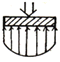
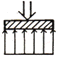
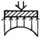
(정답률: 57%)
56. 그림과 같은 단순보에서 RB지점의 반력는?
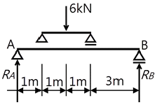
- 1kN
- 2kN
- 3kN
- 4kN
(정답률: 49%)
57. 현장치기 콘크리트에서 흙에 접하여 콘크리트를 친 후 영구히 흙에 묻혀 있는 콘크리트의 경우 철근에 대한 콘크리트의 최소 피복두께는?(2021년 개정된 규정 적용됨)
- 40mm
- 60mm
- 75mm
- 100mm
(정답률: 59%)
58. 강구조 기둥과 강구조 보의 모멘트접합에 관한 설명으로 틀린 것은?
- 전단접합에 비해 시공이 간단하고 재료비가 줄어든다.
- 단부를 고정지점으로 가정하여 접합하는 방법이다.
- 보의 휨모멘트를 기둥이 일부 부담하므로 보를 경제적으로 설계할 수 있다.
- 접합부가 휨모멘트에 대한 저항능력을 갖고 있다.
(정답률: 48%)
59. 단면계수 및 단면2차반지름에 관한 설명 중 틀린 것은?
- 단면2차반지름은 도심축에 대한 단면2차모멘트를 단면적으로 나누 값의 제곱근이다.
- 단면계수가 큰 단면이 휨에 대한 저항성이 작다.
- 단면계수의 단위는 cm3, m3이며 부호는 항상 (+)이다.
- 단면2차반지름은 좌굴에 대한 저항값을 나타낸다.
(정답률: 37%)
60. 그림과 같은 양단 고정보에서 A지점의 반력 모멘트 MA는? (단, 보의 휨강도 EI는 일정하다.)
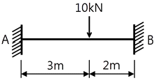
- 2.6 kN·m
- 3.2 kN·m
- 4.8 kN·m
- 5.4 kN·m
(정답률: 44%)
4과목: 건축설비
61. 다음의 소방시설 중 소화설비에 속하지 않는 것은?
- 옥내소화전설비
- 스프링클러설비
- 연결송수관설비
- 물분무등소화설비
(정답률: 66%)
62. 전압의 분류에서 저압의 범위 기준으로 옳은 것은?(2021년 개정된 KEC 규정 적용됨)
- 직류400[V]이하, 교류400[V]이하
- 직류400[V]이하, 교류600[V]이하
- 직류600[V]이하, 교류600[V]이하
- 직류1500[V]이하, 교류1000[V]이하
(정답률: 69%)
63. 급수기구 부하단위수를 결정할 때 기준이 되는 위생기구는?
- 욕조
- 소변기
- 대변기
- 세면기
(정답률: 75%)
64. 증기난방에 관한 설명으로 옳지 않은 것은?
- 온수난방에 비해 방열기의 방열면적이 작다.
- 운전시 증기해머로 인한 소음을 일으키기 쉽다.
- 온수난방에 비해 한랭지에서 동결의 우려가 적다.
- 온수난방에 비해 열용량이 크므로 예열시간이 길다.
(정답률: 68%)
65. 벽체의 열관류율 계산에 직접적으로 필요한 요소가 아닌 것은?
- 벽체의 온도
- 구성재료의 두께
- 벽체의 표면열전달률
- 구성재료의 열전도율
(정답률: 56%)
66. 냉풍과 온풍을 혼합하여 부하조건이 다른 계통마다 공기를 공급하는 공기조화방식은?
- 팬코일유닛방식
- 멀티존유닛방식
- 변풍량 단일덕트방식
- 정풍량 단일덕트방식
(정답률: 68%)
67. 저항 5[Ω], 15[Ω]이 직렬로 접속된 회로에서 5[A]의 전류가 흐를 때, 인가한 전압은?
- 200[V]
- 150[V]
- 100[V]
- 50[V]
(정답률: 62%)
68. 밸브의 종류와 사용 개소의 연결이 옳지 않은 것은?
- 볼 밸브 – 가스 배관
- 게이트 밸브 – 바이패스 배관
- 풋 밸브 – 양수 펌프 흡입구
- 체크 밸브 – 양수 펌프 토출구
(정답률: 55%)
69. 방열기의 용량표시와 관계되는 E.D.R 이 의미하는 것은?
- 중량
- 상당증발량
- 실제증발량
- 상당방열면적
(정답률: 76%)
70. 다음 중 교류전동기에 속하는 것은?
- 복권전동기
- 분권전동기
- 직권전동기
- 동기전동기
(정답률: 55%)
71. 4의 물 800L를 100로 가열하면 체적 팽창량은? (단, 물의 밀도는 4일 때 1kg/L, 100일 때 0.9586kg/L 이다.)
- 약 35L
- 약 40L
- 약 45L
- 약 50L
(정답률: 31%)
72. 습공기선도 상에서 별도의 수분 증가 및 감소없이 건구 온도만 상승시킬 경우 변화하지 않는 것은?
- 엔탈피
- 절대습도
- 비체적
- 습구온도
(정답률: 66%)
73. 온수난방의 배관계통에서 물의 온도변화에 따른 체적 증감을 흡수하기 위하여 설치하는 것은?
- 컨벡터
- 감압밸브
- 팽창탱크
- 열교환기
(정답률: 51%)
74. 어느 점광원과 1m 떨어진 곳의 직각면 조도가 100[lx]일 때, 이 광원과 2m 떨어진 곳의 직각면 조도는?
- 25[lx]
- 50[lx]
- 75[lx]
- 100[lx]
(정답률: 57%)
75. 바닥이나 벽을 관통하는 배관에 슬리브(sleeve)를 설치하는 가장 주된 이유는?
- 방동, 방로를 위하여
- 수격작용을 방지하기 위하여
- 관의 설치 및 교체·수리를 위하여
- 관 내 스케일 생성을 방지하이 위하여
(정답률: 71%)
76. 급수방식 중 펌프직송방식에 관한 설명으로 옳은 것은?
- 수질오염의 가능성이 없다.
- 급수 공급 방향은 일반적으로 하향식이다.
- 전력공급이 안되는 경우에도 급수가 가능하다.
- 배관 내 압력변동 등을 감지하여 펌프를 가동한다.
(정답률: 55%)
77. 공기조화방식 중 전공기방식에 관한 설명으로 옳지 않은 것은?
- 덕트 스페이스가 필요없다.
- 중간기에 외기냉방이 가능하다.
- 실내에 배관으로 인한 누수의 우려가 없다.
- 냉·온풍의 운반에 필요한 팬의 소요동력이 냉·온수를 운반하는 펌프동력보다 많이 든다.
(정답률: 54%)
78. 원심식 펌프의 일동으로 다수의 임펠러가 케이싱내에서 고속회전하는 방식으로 일반건물의 급수·공조용으로 많이 사용하는 것은?
- 축류 펌프
- 제트 펌프
- 기어 펌프
- 볼류트 펌프
(정답률: 58%)
79. 다음과 같은 조건에 있는 실의 체적이 400m3이고, 틈새바람량이 0.5회/h 일 때 현열부하량은?
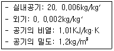
- 1.25kW
- 1.30kW
- 1.35kW
- 1.40kW
(정답률: 55%)
80. 배관공사에서 동관과 스테인리스강관가 같이 서로 다른 재질의 배관을 접합할 경우 반드시 수행해야 하는 것은?
- 보온
- 절연
- 탈산소
- 탈기포
(정답률: 73%)
5과목: 건축관계법규
81. 주차대수 규모가 50대 이상인 노외주차장 출입구의 최소 너비는? (단, 출구와 입구를 분리하지 않은 경우)
- 3.3m
- 3.5m
- 4.5m
- 5.5m
(정답률: 53%)
82. 다음 중 건축법령상 공동주택에 속하지 않는 것은?
- 아파트
- 연립주택
- 다가구주택
- 다세대주택
(정답률: 72%)
83. 다음 중 대수선에 속하지 않는 것은?
- 미관지구에서 건축물의 담장을 변경하는 것
- 방화구획을 위한 벽을 수선 또는 변경하는 것
- 다세대주택의 세대 간 경계벽을 수선 또는 변경하는 것
- 기존 건축물의 내력벽, 기둥, 보를 일시에 철거하고 그 대지에 종전과 같은 규모의 범위에서 건축물을 다시 축조하는 것
(정답률: 65%)
84. 다음 중 보존지구의 지정 목적으로 가장 알맞은 것은?
- 경관을 보호·형성하기 위하여
- 문화재, 중요 시설물 및 문화적·생태적으로 보존가치가 큰 지역의 보호와 보존을 위하여
- 학교시설·공용시설·항만 또는 공항의 보호, 업무기능의 효율화, 항공기의 안전운항 등을 위하여
- 주거기능 보호나 청소년 보호 등의 목적으로 청소년 유해시설 등 특정시설의 입지를 제한하기 위하여
(정답률: 69%)
85. 국토의 계획 및 이용에 관한 법률 시행령에 규정되어 있는 용도지역안에서의 건폐율 기준으로 옳은 것은?
- 제1종 전용주거지역 – 50% 이하
- 제2종 전용주거지역 – 60% 이하
- 제1종 일반주거지역 – 50% 이하
- 제3종 일반주거지역 – 60% 이하
(정답률: 39%)
86. 그림과 같은 도로 모퉁이에서 건축선의 후퇴길이 “a”는?
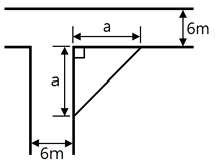
- 2m
- 3m
- 4m
- 5m
(정답률: 60%)
87. 건축법령상 건축물의 대지에 공개공지 또는 공개공간을 확보하여야 하는 대상 건축물에 속하지 않는 것은?(단, 해당 용도로 쓰는 바닥의 면적의 합계가 5000m2인 경우)
- 숙박시설
- 종교시설
- 의료시설
- 문화 및 집회시설
(정답률: 63%)
88. 판매시설의 부설주차장 설치기준으로 옳은 것은?
- 시설면적 100m2당 1대
- 시설면적 120m2당 1대
- 시설면적 150m2당 1대
- 시설면적 200m2당 1대
(정답률: 67%)
89. 다음은 지하층의 정으에 관한 기준 내용이다. ( ) 안에 알맞은 것은?
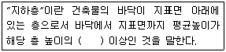
- 4분의 1
- 3분의 1
- 2분의 1
- 1분의 1
(정답률: 84%)
90. 그림과 같은 대지의 A점에서 건축할 수 있는 건축물의 최고 층수는? (단, 건축물의 층고는 4m 이다.)
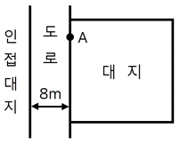
- 3층
- 4층
- 5층
- 6층
(정답률: 44%)
91. 건축법령에 따른 공사강리자의 수행 업무가 아닌 것은?
- 공정표의 검토
- 상세시공도면의 작성
- 공사현장에서의 안전관리의 지도
- 시공계획 및 공사관리의 적정여부의 확인
(정답률: 81%)
92. 건축법상 건축물의 노후화를 억제하거나 기능 향상 등을 위하여 대수선하거나 일부 증축하는 행위로 정의되는 용어는?
- 재축
- 재건축
- 리빌딤
- 리모델링
(정답률: 82%)
93. 노외주차장의 출구와 입구(노외주차장의 차로의 노면이 도로의 노면에 접하는 부분)를 설치하여서는 안되는 도로의 종단 기울기의 기준은?
- 종단 기울기가 3%를 초과하는 도로
- 종단 기울기가 5%를 초과하는 도로
- 종단 기울기가 7%를 초과하는 도로
- 종단 기울기가 10%를 초과하는 도로
(정답률: 53%)
94. 다음 중 허가대상에 해당하는 용도 변경은?
- 영업시설군에서 주거업무시설군으로 변경
- 교육 및 복지시설군에서 영업시설군으로 변경
- 전기통신시설군에서 문화 및 집화시설군으로 변경
- 문화 및 집회시설군에서 교육 및 복지시설군으로 변경
(정답률: 53%)
95. 특별시나 광역시에 건축할 경우, 특별시장이나 광역시장의 허가를 받아야 하는 건축물의 층수 기준은?
- 6층
- 11층
- 21층
- 31층
(정답률: 61%)
96. 6층 이상의 거실면적의 합계가 3000m2인 경우, 다음 건축물 중 설치하여야 하는 승용승강기의 최소 대수가 가장 많은 것은?(단, 8인승 승강기의 경우)
- 판매시설
- 업무시설
- 숙박시설
- 위락시설
(정답률: 52%)
97. 특별피난계단에 설치하는 배연설비의 구조에 관한 기준 내용으로 옳지 않은 것은?
- 배연구 및 배연풍도는 불연재료로 한다.
- 배연구가 외기에 접하지 아니하는 경우에는 배연기를 설치하여야 한다.
- 배연구에 설치하는 수동개방장치 또는 자동개방장치는 손으로도 열고 닫을 수 있도록 한다.
- 배연구는 평상시에는 열린 상태를 유지하고 배연에 의한 기류로 인하여 닫히지 않도록 한다.
(정답률: 68%)
98. 다음은 건축물의 높이 산정방법에 관한 기준 내용이다. ( )안에 알맞은 것은?(단, 공동주택이 아닌 경우)
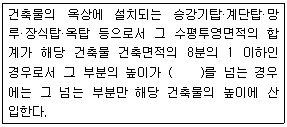
- 4m
- 6m
- 10m
- 12m
(정답률: 51%)
99. 다음은 공동주택 중 아파트에 설치하는 대피공간에 관한 기준 내용이다. 밑줄 친 요건의 내용으로 옳은 것은?
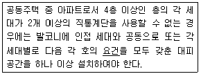
- 대피공간은 바깥의 공기와 접하지 않을 것
- 대피공간은 실내의 다른 부분과 방화구획으로 구획될 것
- 대피공간의 바닥면적은 각 세대별로 설치하는 경우에는 최소 5m2 이상일 것
- 대피공간의 바닥면적은 인접 세대와 공동으로 설치하는 경우에는 최소 5m2 이상일 것
(정답률: 58%)
100. 다음은 건축물의 피난·안전을 위하여 건축물 중간층에 설치하는 대피공간인 피난안전구역에 관한 기준 내용이다. ( )안에 알맞은 것은?
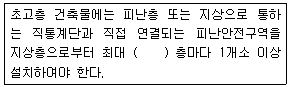
- 10개
- 20개
- 30개
- 40개
(정답률: 63%)